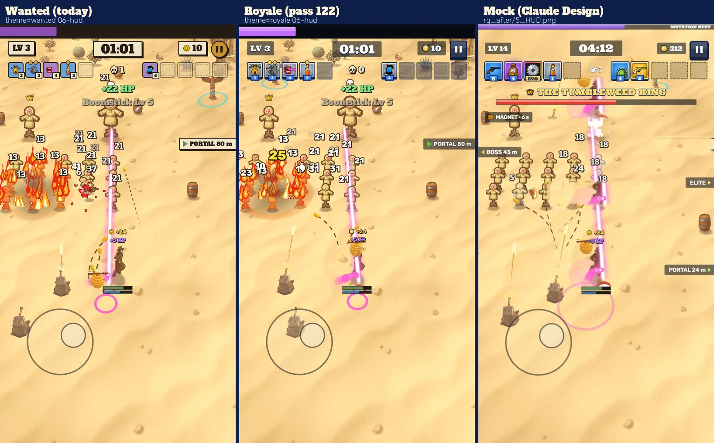
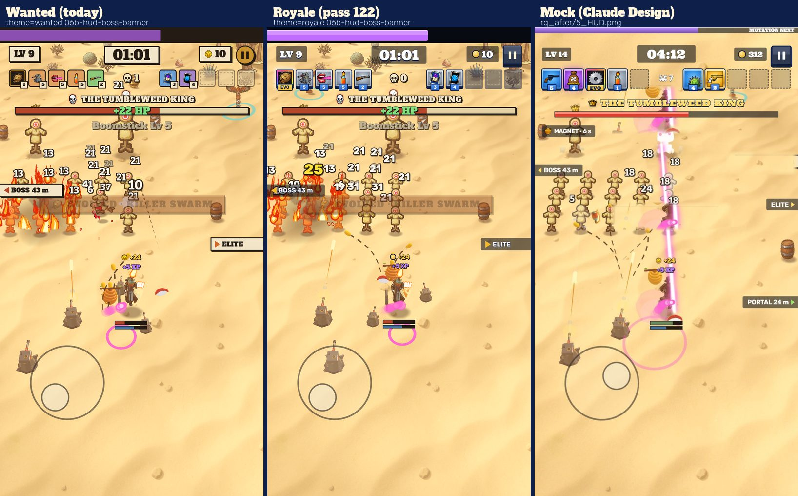
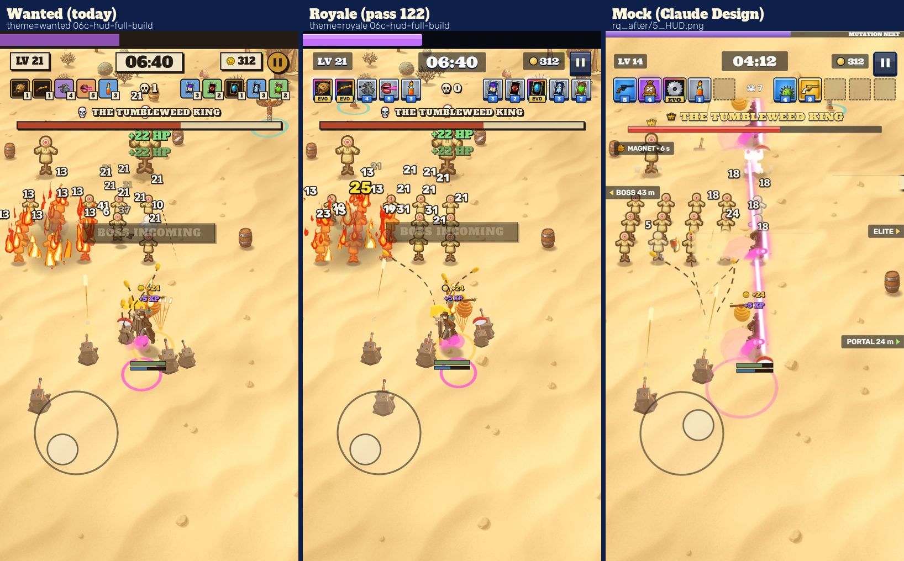
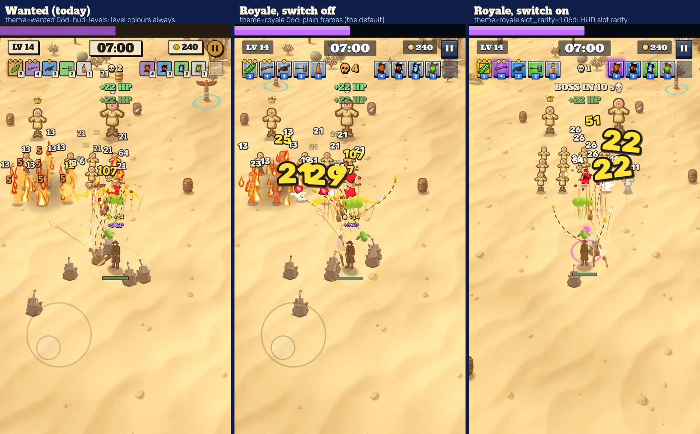
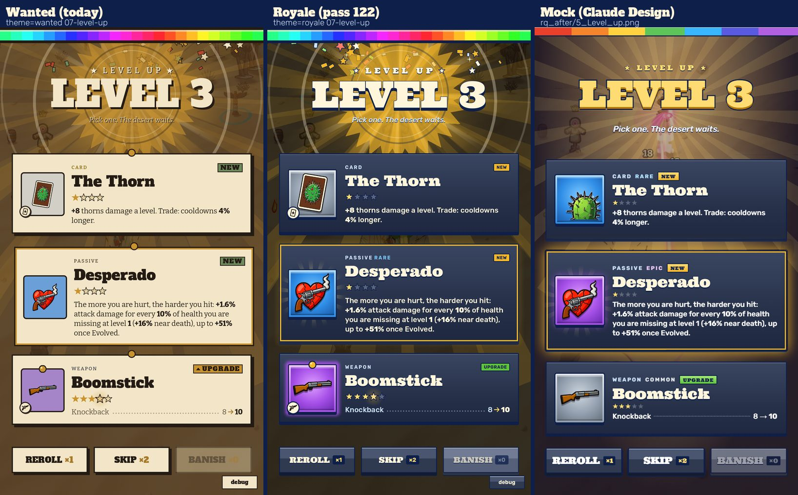
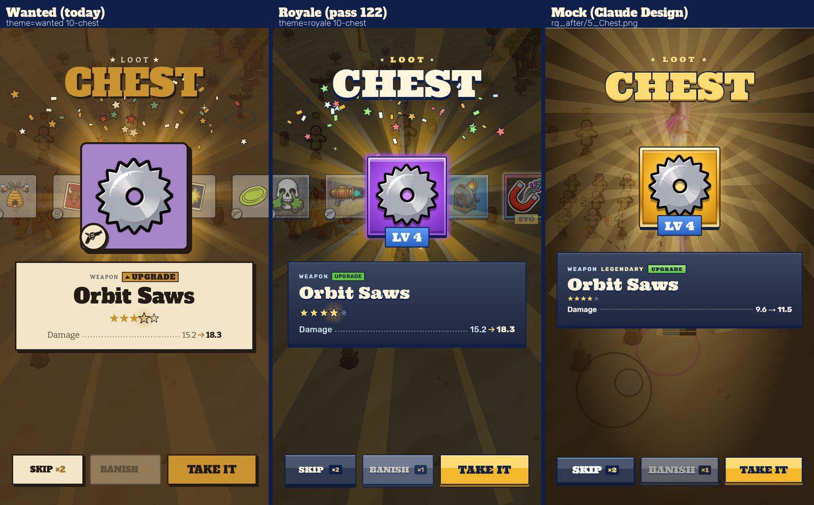
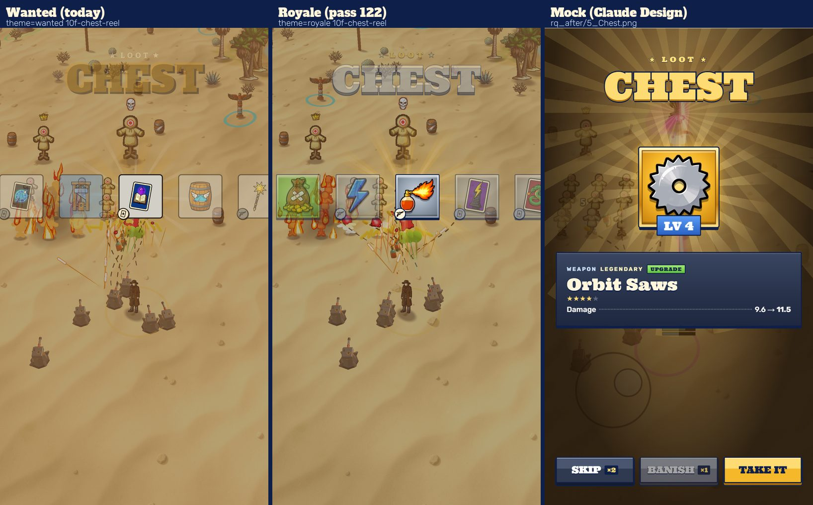
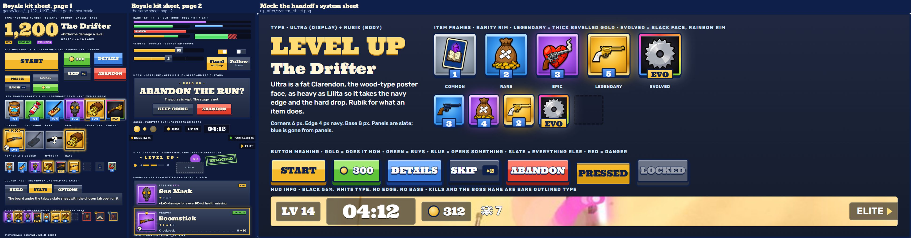

Royale checkpoint 1 (pass 122): HUD, Level-up, Chest, the kit
Every picture is three phones side by side: today's Wanted on the left, the Royale theme in the middle
(the same screen with Settings.ui_theme = royale; Wanted stays the default), and Claude Design's mock on the right
(.playwright-mcp/rq_after/, scaled to the phones). Captures from game/tools/wanted_shots.gd at 1080 x 1920, shown at half size.
Flip the theme on the phone: Settings, the Debug panel (ten taps on the hints switch), UI theme; or the developer menu's row; or the in-run
debug panel's UI theme button. The HUD restyles itself at once, every other screen when it is next built.




HUD slot rarity: on in the in-run debug panel: pass 48's level colour
on weapons and Cards, a passive item's rarity, the legendary with its bevel and glow, as the mock.



game/tools/_p122_UIKIT_sheet.gd, two pages) beside the mock's system sheet. Garry's choices in it:
cream titles with gold only for what acts at once, coins, stars and Legendary; Rubik for tags and small labels (no Ultra under 28 px); the bars brighter than the
mock's ("rather dim"); button colours by meaning; the Evolved black face with the rainbow rim and EVO plaque; Ultra for display with the navy edge.Read with
- Kept as today in both themes on purpose: the kill counter, the boss's name and bar, the hero's HP and shield bars, the floating damage numbers, the joystick, the level-up's shine and confetti, the chest's reel motion, sunburst and confetti.
- Also kept exactly as today under Royale (Garry: "Toasts, banners, hints and TAP TO GO stay as they are"): the toasts ("+22 HP", "Boomstick Lv 5"),
the banners ("BOSS INCOMING", "EVOLVED · KILLER SWARM", "ENDLESS") with their boxes, the hint lines and TAP TO GO with its line (the kit's
W.wanted_textandHardBox.themed = false). - The rarity word sits on passive items only until the weapon and Card tiers are picked (the proposal:
tools/dl/p122/LEAD/rarity_tiers.md). - The mock's gold loading bar, STORE tab, sunset backdrop, the Heroes screen and the Upgrade board are later checkpoints; nothing of them is in these pictures.
Sources: tools/dl/p122/UICAPTURE/ (wanted/, royale/, royale_rarity/, the sheets, build_review.py), captured again after the review's fixes. Pass 122.